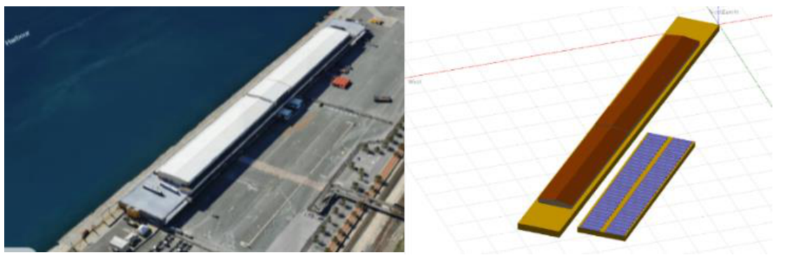
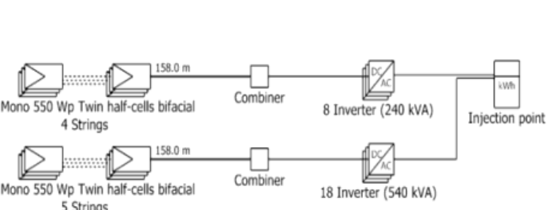
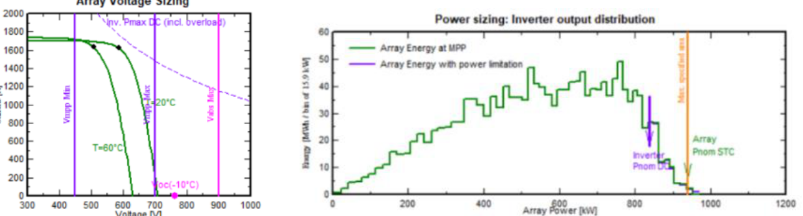
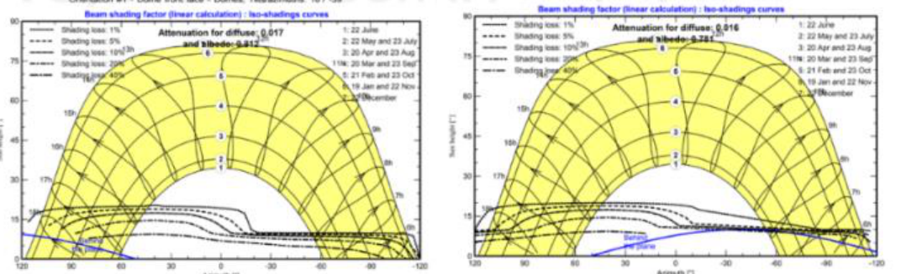
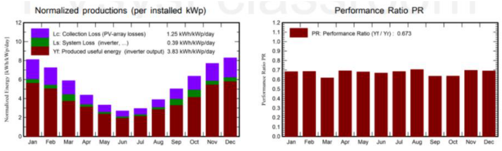

939 kWp光伏阵列容量PV array capacity
1708550 Wp 双面组件550 Wp bifacial modules
780 kWac交流侧逆变器容量AC inverter capacity
1.20直流/交流容量比DC/AC ratio
931.8 kWh储能有效容量usable BESS capacity
1263.2 MWh年发电量annual production
67.29%性能比performance ratio
30.83%内部收益率internal rate of return
项目概览（Situation, Task, Action, Result, STAR）Project Overview (STAR)
- Situation
- 课程要求四人小组比较英国南安普敦（Southampton）与澳大利亚珀斯（Perth）的并网光伏系统，覆盖住宅屋顶和港口商业场景，并从太阳能资源、工程配置、经济性和减排效果进行评价。 The course required a four-person team to compare grid-connected PV systems in Southampton, UK and Perth, Australia, across residential rooftop and commercial port scenarios, considering solar resource, engineering design, economics and carbon savings.
- Task
- 我负责珀斯太阳能资源分析和弗里曼特尔港大型光伏储能系统（Photovoltaic and Battery Energy Storage System, PV-BESS）方案，需要把港口用电目标、屋顶面积、气象数据和电价假设转化为可在光伏仿真软件（PVsyst）中验证的工程模型。 I was responsible for the Perth solar resource analysis and the Fremantle Harbour PV-BESS design, converting port load targets, roof area, weather data and tariff assumptions into an engineering model that could be validated in PVsyst.
- Action
- 完成负荷目标推算、550 Wp 双面半片组件选型、26 台 30 kW 串型逆变器配置、电池储能系统（Battery Energy Storage System, BESS）容量计算、三维（3D）场景建模、近端遮挡和系统损失分析，并建立 20 年财务模型。 I estimated the design load target, selected 550 Wp bifacial half-cell modules, configured 26 x 30 kW string inverters, sized the BESS, built the 3D scene, analysed near-shading and system losses, and prepared a 20-year financial model.
- Result
- 形成 939 kWp 光伏阵列、931.8 kWh 可用储能容量和 1.20 直流/交流容量比（Direct Current/Alternating Current ratio, DC/AC ratio）的方案；仿真年发电量 1263.2 MWh，性能比（Performance Ratio, PR）67.29%，平准化度电成本（Levelized Cost of Energy, LCOE）£0.1112/kWh，投资回收期 3.3 年，内部收益率（Internal Rate of Return, IRR）30.83%。 The final design used a 939 kWp PV array, 931.8 kWh usable storage and a 1.20 DC/AC ratio. Simulated annual production was 1263.2 MWh, with 67.29% PR, £0.1112/kWh LCOE, 3.3-year payback and 30.83% IRR.
项目边界Project Boundary
- 地点：澳大利亚西澳州弗里曼特尔港客运站前停车场屋顶，报告坐标约为 32°02'54"S, 115°44'50"E。Location: car-park roof in front of the Fremantle passenger station, Western Australia, with report coordinates around 32°02'54"S, 115°44'50"E.
- 目标：围绕港口商业负荷设计并网光伏与储能方案，而不是完整港口微电网控制系统。Goal: design a grid-connected PV and storage solution for a commercial harbour load, not a full port microgrid control system.
- 仿真：使用光伏仿真软件（PVsyst）和气象数据库（Meteonorm 8.2）数据，重点评估发电量、损失链、性能比和财务可行性。Simulation: PVsyst with Meteonorm 8.2 weather data, focused on energy yield, loss chain, performance ratio and financial feasibility.
- 公开展示：本页展示工程逻辑和图示证据，不上传成绩单、奖状或完整报告原件。Public presentation: this page shows engineering logic and visual evidence, without publishing transcripts, certificates or full report PDFs.
容量配置与设计逻辑Sizing and Design Logic
| 需求推算Demand Estimate | 根据报告使用的港口能耗数据，836 MWh/year 约对应 Victoria Quay 15% 用电；若覆盖 50%，目标电量约为 2786.67 MWh/year。Using the port energy data adopted in the report, 836 MWh/year corresponds to about 15% of Victoria Quay demand; a 50% target implies about 2786.67 MWh/year. |
|---|---|
| 光伏阵列PV Array | 1708 块 550 Wp 双面半片组件，总容量约 939 kWp，阵列面积约 4412 m²。1708 x 550 Wp bifacial half-cell modules, giving about 939 kWp and roughly 4412 m² array area. |
| 逆变器Inverters | 26 台 30 kWac 串型逆变器，总交流侧容量 780 kWac；直流/交流容量比约 1.20，用于提高逆变器利用率，并接受少量高辐照时段削峰风险。26 x 30 kWac string inverters, giving 780 kWac. The DC/AC ratio is about 1.20, increasing inverter utilisation while accepting limited clipping risk during high-irradiance periods. |
| 储能Battery Storage | 采用 BYD Battery Box Premium HVS 12.8 参数：512 V、25 Ah，91 个单元并联，理想容量 1164.8 kWh；按最低荷电状态（State of Charge, SOC）20% 计算，可用容量约 931.8 kWh。Based on BYD Battery Box Premium HVS 12.8 parameters: 512 V, 25 Ah and 91 units in parallel. Ideal capacity is 1164.8 kWh; with 20% minimum SOC, usable energy is about 931.8 kWh. |
| 布局Layout | 采用东西双拱（East-West Dome）低倾角行排，两个方位角约为 -39° 和 +141°，目的是提升早晚发电、降低行间遮挡并适配大面积平屋顶。An east-west dome low-tilt row layout was used, with azimuths around -39° and +141°, to improve morning/evening generation, reduce row-to-row shading and suit a large flat roof. |
仿真证据Simulation Evidence
场地、建模与损失结果 Site, Model and Loss Evidence
以下图示用于支撑项目叙述：从港口场地、三维建模、单线配置到遮挡和发电性能，均对应报告中的关键工程判断。 These visuals support the case narrative: site selection, 3D modelling, single-line configuration, shading and production performance all correspond to key engineering decisions in the report.





经济与环境结果Economic and Environmental Results
- 年发电量：1263.2 MWh/year；比发电量约 1345 kWh/kWp/year。Annual production: 1263.2 MWh/year; specific production about 1345 kWh/kWp/year.
- 港口模拟负荷覆盖率：太阳能保障率（Solar Fraction, SF）97.78%。该指标针对模型中的设计负荷，不代表完整港口全站所有用电。Simulated load coverage: 97.78% solar fraction. This refers to the modelled design load, not every electrical load across the entire port.
- 财务结果：投资回收期 3.3 年，20 年净现值（Net Present Value, NPV）£3,980,509，内部收益率（Internal Rate of Return, IRR）30.83%，投资回报率（Return on Investment, ROI）587.1%。Financial results: 3.3-year payback, £3,980,509 20-year NPV, 30.83% IRR and 587.1% ROI.
- 度电成本：平准化度电成本（Levelized Cost of Energy, LCOE）£0.1112/kWh；30 年累计二氧化碳（Carbon Dioxide, CO2）减排约 27,257.7 吨。Energy cost and carbon: £0.1112/kWh LCOE and about 27,257.7 tonnes of CO2 savings over 30 years.
专业复核与局限Engineering Review and Limitations
- 储能规模偏小：931.8 kWh 可用容量可支持日内移峰，但相对于 1263.2 MWh 年发电量仍有限，难以完全吸收所有富余光伏电量。Storage remains modest: 931.8 kWh usable capacity supports intraday shifting but is limited relative to 1263.2 MWh/year generation, so it cannot absorb all surplus PV energy.
- 组件参数为通用模型：报告采用光伏仿真软件（PVsyst）数据库中的通用组件和电池参数，真实采购前应使用厂家数据表重新校核。Generic component data: the report used PVsyst generic module and battery parameters; real procurement would require re-checking with manufacturer datasheets.
- 屋顶结构未详细验算：本项目聚焦电气与经济仿真，实际落地前还需开展屋面承载、风荷载、防火间距、运维通道和并网审批评估。Roof structure was not fully engineered: the project focused on electrical and economic simulation; real deployment would also require roof loading, wind loading, fire spacing, maintenance access and grid-connection studies.
- 电价与收益敏感：内部收益率对上网电价、运营成本和电池更换周期敏感，因此应在后续版本中增加敏感性分析。Revenue is tariff-sensitive: IRR depends on export tariff, operating cost and battery replacement assumptions, so future work should add sensitivity analysis.